SunaRi Beach Resort Selayar adalah resort tepi pantai di Pantai Sunari, pesisir barat Kepulauan Selayar, Sulawesi Selatan. Setiap sore, matahari terbenam tepat di depan pantai kami, di atas laut yang tenang.
Kami memiliki lima tipe bungalow kayu dengan teras pribadi, mulai dari rumah panggung di bibir pantai, bungalow A-frame dengan kamar mandi semi-outdoor, hingga bungalow dua lantai untuk keluarga hingga 8 orang. Semua kamar dilengkapi AC dan Wi-Fi, dan sudah termasuk sarapan.
Pantai kami landai dan aman untuk anak-anak. Sore hari, mendayunglah dengan kayak menyongsong senja, berayun di ayunan raksasa, lalu tutup hari dengan ikan bakar di Bajoy Beach Resto.
“Datanglah untuk senjanya, tinggallah untuk ketenangannya.”
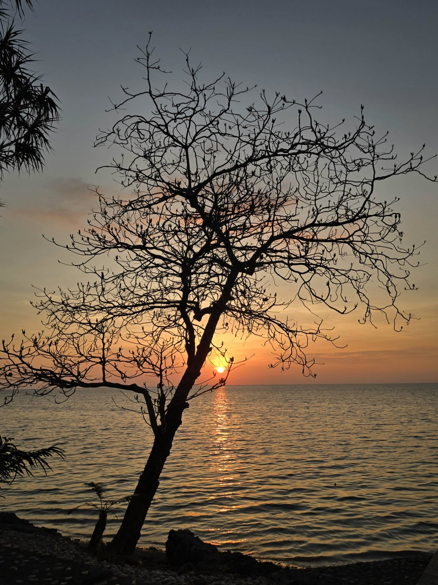
SunaRi dalam angka
5
Tipe bungalow
8
Tamu maks. / Family
4
Pilihan tur pulau
3
Rute menuju Selayar
SunaRi Beach Resort Selayar · Panduan Tamu3
02Info penting
Informasi sekilas
Simpan halaman ini. Semua yang paling sering ditanyakan tamu ada di sini.
Alamat
Jl. Poros Benteng – Appatana KM 14, Dusun Tile-Tile Utara, Desa Patikarya, Kec. Bontosikuyu, Kab. Kepulauan Selayar, Sulawesi Selatan
Pantai
Pantai Sunari, pesisir barat Pulau Selayar. Landai & aman untuk anak-anak
Check-in / out
Check-in mulai 14.00 WITA · Check-out paling lambat 12.00 WITA
Harga kamar
Mulai Rp 900.000 /malam, sudah termasuk sarapan. Daftar lengkap di Bab 03
Sudah termasuk
Sarapan untuk semua tipe kamar · AC · Wi-Fi · teras pribadi
Ketersediaan kamar menyesuaikan tanggal. Hubungi admin kami lewat WhatsApp untuk cek kamar kosong & konfirmasi harga terbaru.
SunaRi Beach Resort Selayar · Panduan Tamu4
03Kamar
Lima tipe bungalow
Setiap bungalow terbuat dari kayu dengan teras pribadi. Semua tipe sudah termasuk sarapan, AC dan Wi-Fi.
Tipe kamar
Kapasitas
Tempat tidur
Keistimewaan
Harga / malam
Standard Bungalow
2 orang (maks. 3)
Queen
Teras luas menghadap laut, kamar mandi bambu
Rp 900.000
VIP Standard Bungalow
2 orang (maks. 3)
King
Rumah panggung di tepi pantai, teras ke arah senja
Rp 1.000.000
Superior Bungalow
2 orang (maks. 3)
King
A-frame berloteng, TV, kamar mandi semi-outdoor
Rp 1.500.000
VIP Superior Bungalow
2 orang (maks. 3)
King
Kelas tertinggi: bathtub, air panas, TV, mini bar
Rp 2.500.000
Family Superior Bungalow
6 orang (maks. 8)
Besar + 4 kasur
2 lantai, kamar mandi di kedua lantai
Rp 2.500.000
Harga per kamar per malam, sudah termasuk sarapan. Extra bed dikenakan biaya tambahan.
Fasilitas di semua kamar
Sarapan
AC
Wi-Fi
Teras pribadi dengan kursi santai
Kopi/teh & pemanas air (kettle)
Meja kerja/rias
Tirai blackout
Bantal & selimut tambahan
Kamar mandi dalam, toilet duduk
Perlengkapan mandi & handuk
Setrika (atas permintaan)
Extra bed (berbayar)
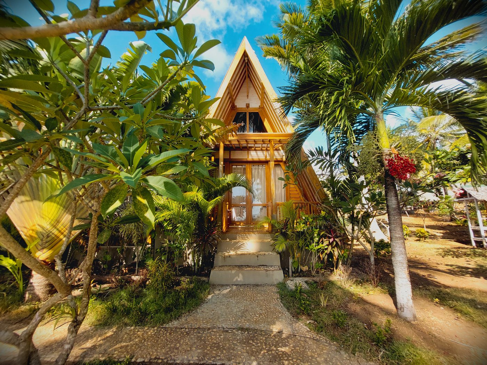
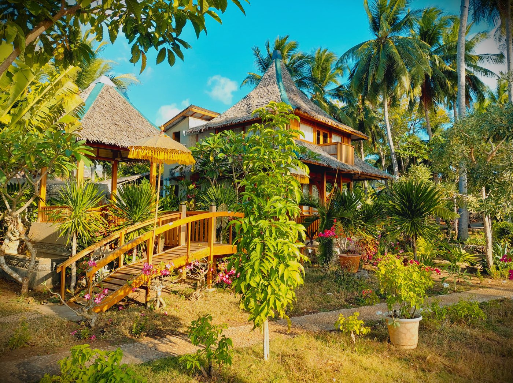
Extra bed: 1 extra bed untuk Standard, VIP Standard, Superior & VIP Superior (maks. 3 orang). 2 extra bed untuk Family Superior (maks. 8 orang). Biaya extra bed dikonfirmasi admin saat reservasi.
SunaRi Beach Resort Selayar · Panduan Tamu5
03 · aKamar
Standard Bungalow
Harga Rp 900.000 /malamKapasitas 2 dewasa (maks. 3)Tempat tidur QueenPemandangan Laut & taman
Pagi menghadap laut Selayar.
Bungalow kayu yang sejuk dan bersih dengan atap tinggi dan teras pribadi yang luas menghadap laut. Nikmati kopi pagi sambil melihat ombak dari kursi santai, lalu berjalan ke pantai untuk menunggu senja. Kamar mandi dalam bernuansa bambu dengan lantai batu alam.
Fasilitas kamar
Sarapan
Queen bed
AC
Wi-Fi
Kopi/teh & kettle
Meja kerja/rias
Tirai blackout
Bantal & selimut tambahan
Shower
Toilet duduk
Perlengkapan mandi & handuk
Teras pribadi & kursi santai
Setrika (atas permintaan)
Extra bed (maks. 1)
SunaRi Beach Resort Selayar · Panduan Tamu6
03 · bKamar
VIP Standard Bungalow
Harga Rp 1.000.000 /malamKapasitas 2 dewasa (maks. 3)Tempat tidur KingPemandangan Laut atau taman
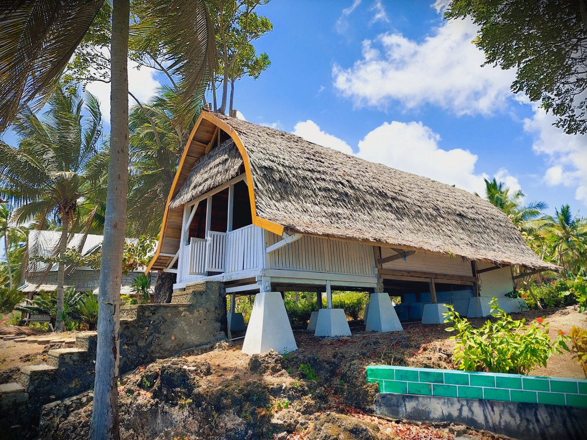
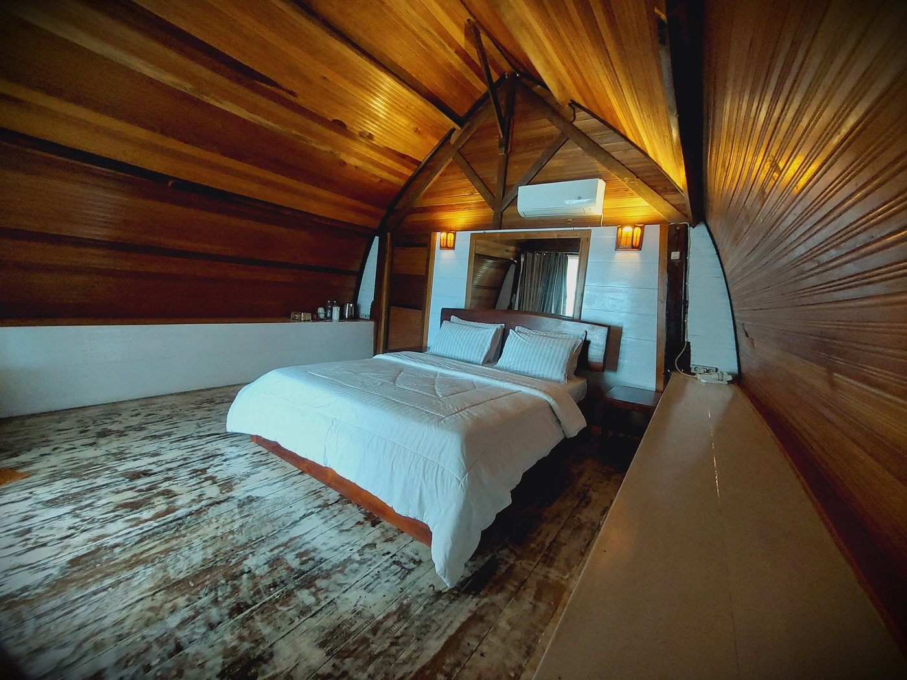
Rumah panggung di bibir Pantai Sunari.
Rumah panggung beratap rumbia di tepi Pantai Sunari, dengan kamar yang lebih luas dibanding Standard Bungalow. Teras pribadi menghadap ke arah matahari terbenam. Pada unit tepi pantai, senja tepat di depan mata. Kamar bernuansa kayu dengan lampu dinding temaram dan area wastafel dengan gantungan baju.
Fasilitas kamar
Sarapan
King bed
AC
Wi-Fi
Kopi/teh & kettle
Meja kerja/rias
Tirai blackout
Bantal & selimut tambahan
Shower
Toilet duduk
Perlengkapan mandi & handuk
Teras pribadi & kursi santai
Setrika (atas permintaan)
Extra bed (maks. 1)
SunaRi Beach Resort Selayar · Panduan Tamu7
03 · cKamar
Superior Bungalow
Harga Rp 1.500.000 /malamKapasitas 2 dewasa (maks. 3)Tempat tidur KingEkstra TV · loteng
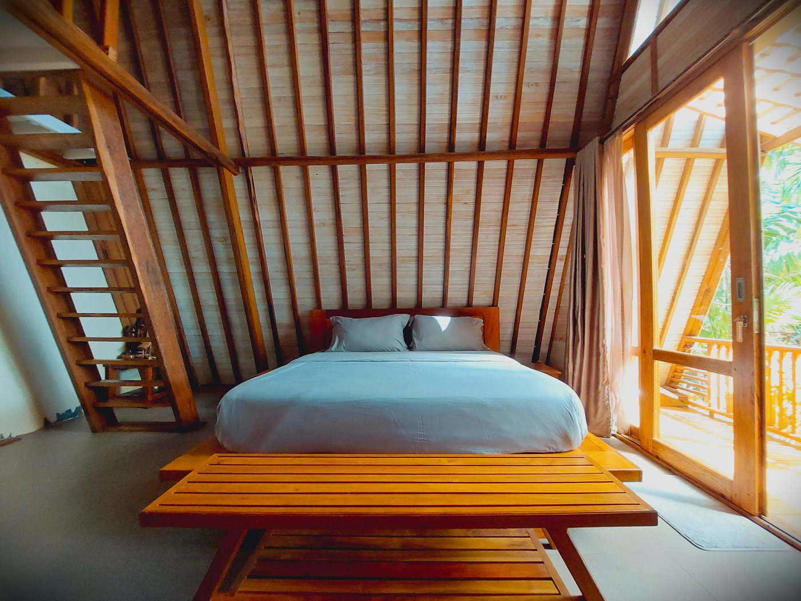
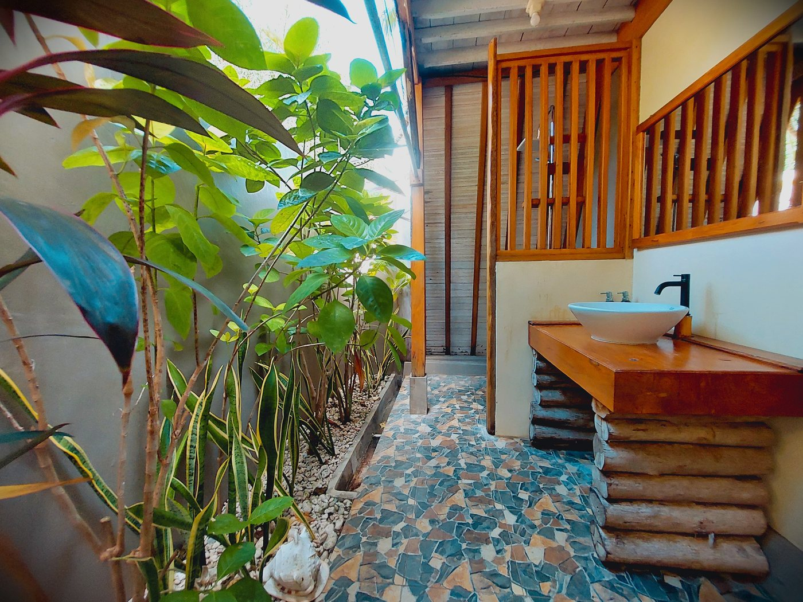
Rumah kayu A-frame di antara pohon kelapa.
Bungalow kayu beratap A-frame dengan loteng di bawah langit-langit kayu yang menjulang, lebih luas dibanding Standard dan VIP Standard. Keistimewaannya adalah kamar mandi semi-outdoor dengan rain shower, dikelilingi taman hijau dan langit terbuka. Teras kayu pribadi menghadap laut atau taman.
Fasilitas kamar
Sarapan
King bed
TV
Loteng
AC
Wi-Fi
Kopi/teh & kettle
Meja kerja/rias
Tirai blackout
Kamar mandi semi-outdoor
Rain shower
Perlengkapan mandi & handuk
Teras pribadi & kursi santai
Setrika (atas permintaan)
Extra bed (maks. 1)
SunaRi Beach Resort Selayar · Panduan Tamu8
03 · dKamar
VIP Superior Bungalow
Harga Rp 2.500.000 /malamKapasitas 2 dewasa (maks. 3)Tempat tidur KingEkstra Bathtub · air panas
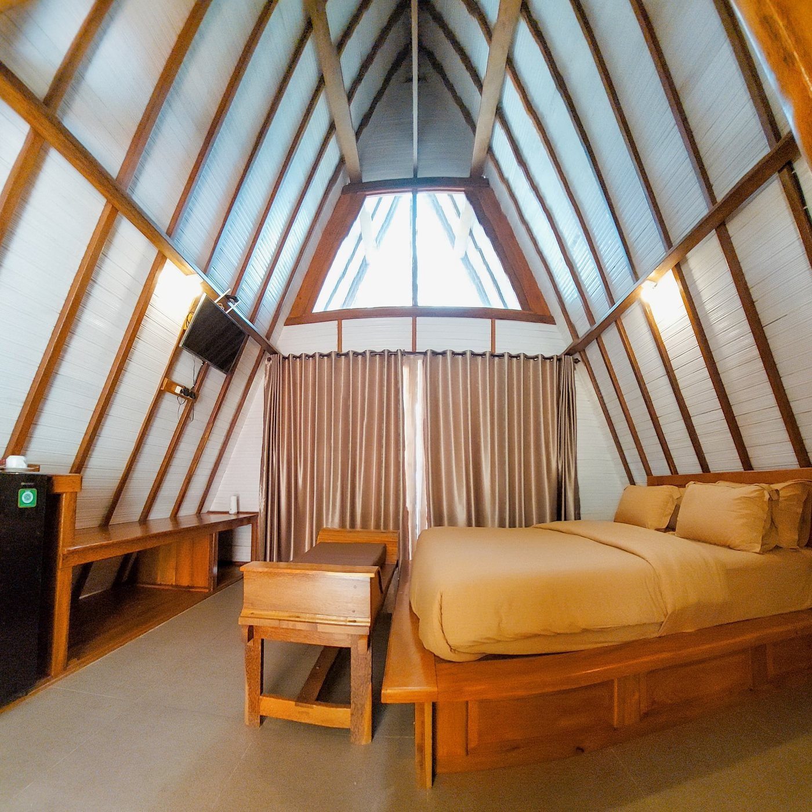
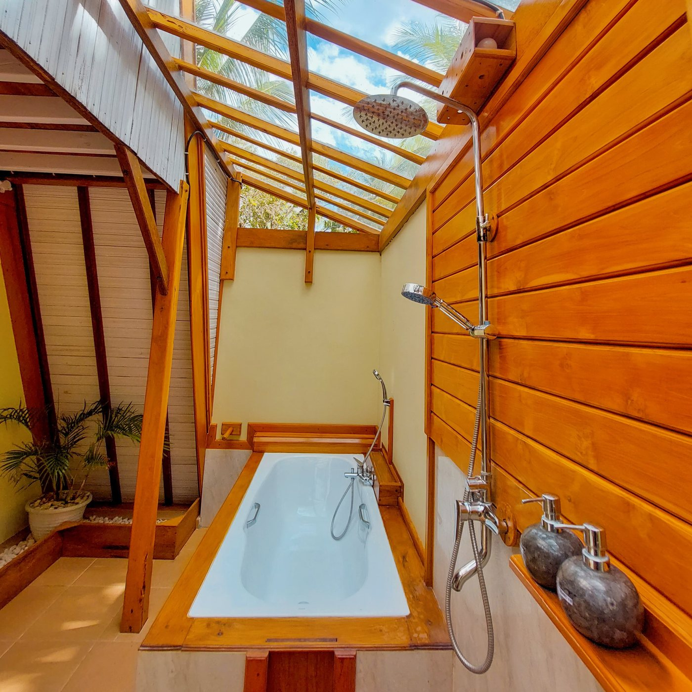
Kelas tertinggi di SunaRi.
Bungalow A-frame beratap rumbia dengan loteng dan jendela segitiga yang membiarkan cahaya pagi masuk. Kamar mandi semi-outdoor beratap kaca dengan bathtub, rain shower dan air panas, satu-satunya tipe kamar dengan air panas, untuk berendam air hangat dengan pohon kelapa tepat di atas kepala.
Fasilitas kamar
Sarapan
King bed
TV
Mini bar/kulkas
Bathtub
Air panas & dingin
Rain shower
Loteng
AC
Wi-Fi
Kopi/teh & kettle
Tirai blackout
Perlengkapan mandi & handuk
Teras pribadi & kursi santai
Extra bed (maks. 1)
SunaRi Beach Resort Selayar · Panduan Tamu9
03 · eKamar
Family Superior Bungalow
Harga Rp 2.500.000 /malamKapasitas 6 orang (maks. 8)Lantai 1 2–3 orangLantai 2 4–5 orang
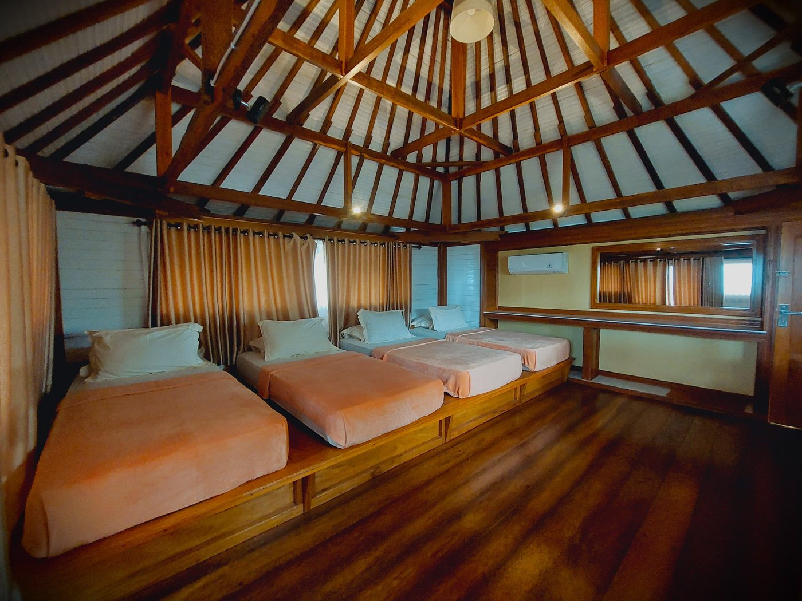
Satu rumah, dua lantai, semua bersama.
Tipe bungalow terbesar di SunaRi, ideal untuk keluarga besar. Lantai 1 untuk 2–3 orang dengan tempat tidur besar, lantai 2 untuk 4–5 orang dengan empat kasur di bawah atap kayu yang tinggi. Toilet dan kamar mandi tersedia di kedua lantai. Teras pribadi dengan kursi santai, pas untuk berkumpul sebelum senja.
Fasilitas kamar
Sarapan
2 lantai
Kamar mandi di kedua lantai
AC
Wi-Fi
Kopi/teh & kettle
Meja kerja/rias
Tirai blackout
Bantal & selimut tambahan
Perlengkapan mandi & handuk
Teras pribadi & kursi santai
Setrika (atas permintaan)
Extra bed (maks. 2)
SunaRi Beach Resort Selayar · Panduan Tamu10
04Restoran
Bajoy Beach Resto
Restoran tepi pantai SunaRi dengan ikan bakar & seafood setiap hari. Sarapan tamu menginap disajikan di sini.
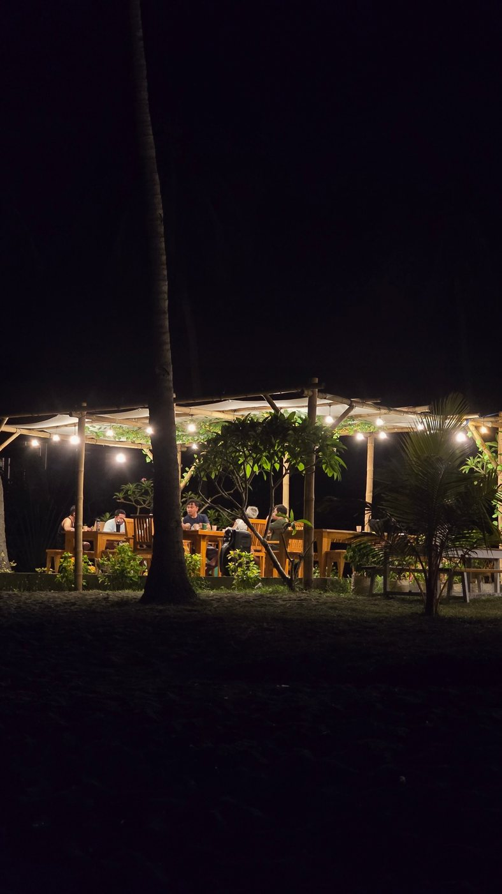
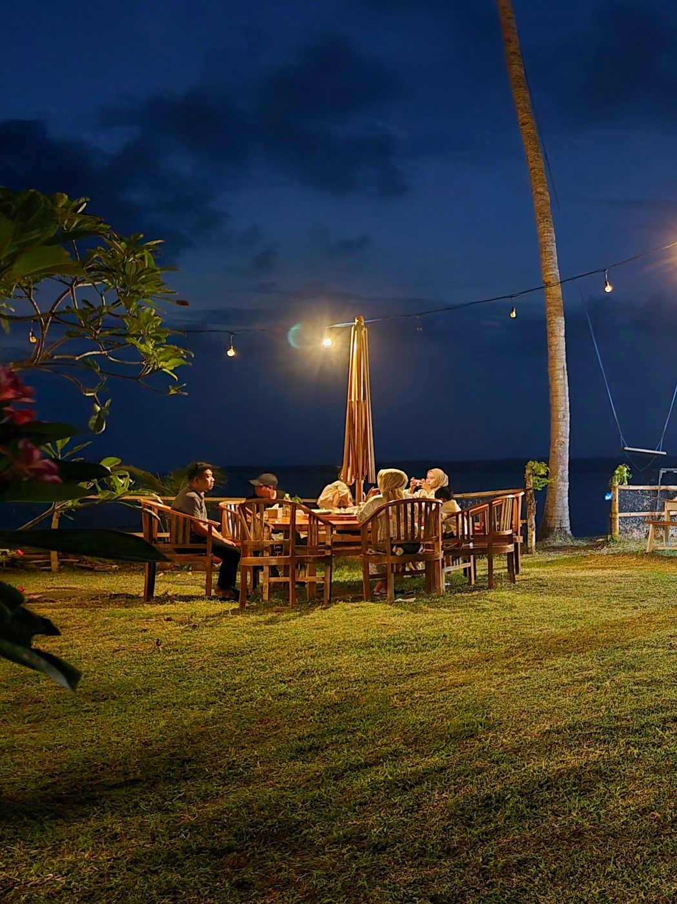
Jam buka
Tamu menginap
07.00 – 21.00 WITA
Tamu tidak menginap
07.00 – 19.00 WITA
Senja Dinner
Makan malam ikan bakar & seafood di tepi pantai saat matahari terbenam. Pesan paling lambat H-1 lewat WhatsApp 0821-8903-3044.
Menu harian
Makanan
Nasi Goreng Sunari
Rp 45.000
Nasi Goreng Seafood
Rp 45.000
Nasi Goreng Egois
Rp 45.000
Nasi Goreng Kampung
Rp 45.000
Ayam Lalapan
Rp 50.000
Ayam Bakar
Rp 50.000
Beef Sandwich
Rp 30.000
Beef Sandwich D.
Rp 40.000
Egg Sandwich
Rp 25.000
Egg Sandwich D.
Rp 35.000
Indomie Goreng
Rp 20.000
Indomie Kuah
Rp 20.000
Drinks
Chocolate M.S
Rp 25.000
Oreo M.S
Rp 25.000
Orange Punch
Rp 25.000
Watermelon L.M
Rp 25.000
Green Tea
Rp 25.000
Hot Tea
Rp 10.000
Ice Tea
Rp 20.000
Black Coffee
Rp 20.000
Coffee Milk
Rp 20.000
Milk Tea
Rp 25.000
Original Coconut
Rp 25.000
Saronso
Rp 25.000
SunaRi Beach Resort Selayar · Panduan Tamu11
04Restoran
Menu snack, jus & minuman
Snack
French Fries
Rp 25.000
Toast
Rp 25.000
Banana Roll
Rp 25.000
Fried Cassava
Rp 25.000
Fried Banana
Rp 25.000
Soft Drink
Coke
Rp 15.000
Fanta
Rp 15.000
Sprite
Rp 15.000
Fresh Tea
Rp 15.000
Pulpy
Rp 15.000
Mineral Water
Rp 10.000
Juice
Avocado
Rp 25.000
Watermelon
Rp 25.000
Melon
Rp 25.000
Mango
Rp 25.000
Dragon Fruit
Rp 25.000
Soursop Fruit
Rp 25.000
Apple
Rp 25.000
Orange
Rp 25.000
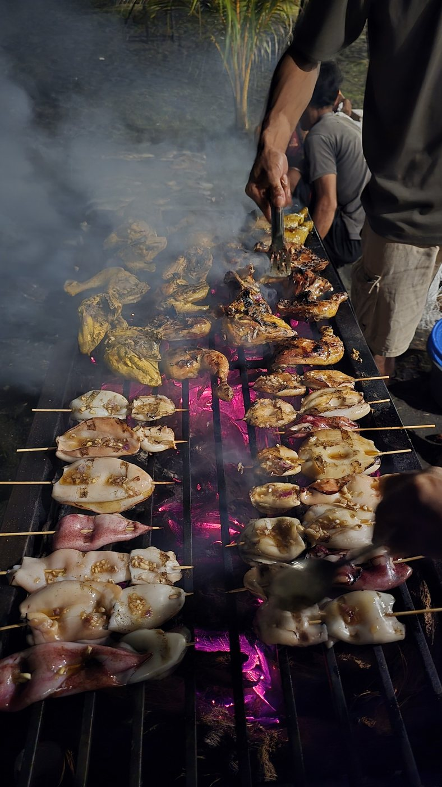
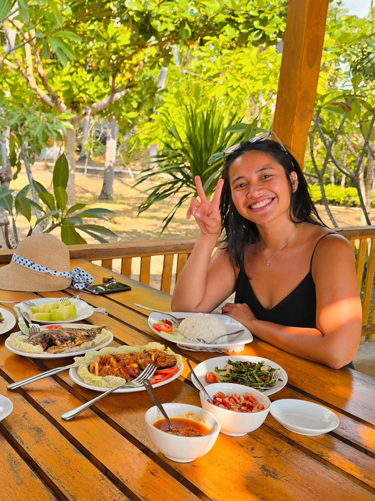
Harga dapat berubah sewaktu-waktu. Menu ikan bakar & seafood untuk Senja Dinner dikonfirmasi admin saat pemesanan.
SunaRi Beach Resort Selayar · Panduan Tamu12
05Aktivitas
Aktivitas di Pantai Sunari
Tidak perlu jauh-jauh: banyak hal bisa dinikmati tanpa meninggalkan resort.
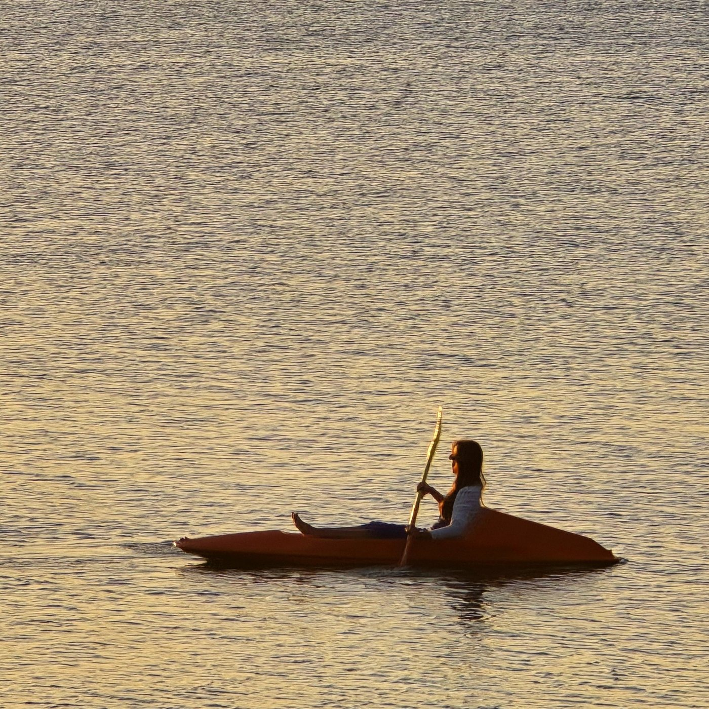
Sewa kayak
Air Pantai Sunari tenang dan landai, paling seru menjelang senja.
Kayak single
Rp 50.000
Kayak double
Rp 100.000
Ayunan raksasa
Spot foto favorit di tepi pantai, berayun dengan matahari terbenam di depan mata. Gratis.
Menunggu senja
Matahari terbenam tepat di depan pantai, sekitar 17.50–18.00 WITA. Paling cantik April–Desember.
Bersantai & bermain air
Pantai landai dan aman untuk anak-anak. Kursi santai di bawah pohon ketapang dengan Pulau Gusung di seberang.
SunaRi Beach Resort Selayar · Panduan Tamu13
05Aktivitas
Sewa alat snorkeling
Nikmati keindahan bawah laut Selayar dengan alat snorkeling berkualitas, bersih, dan terawat.
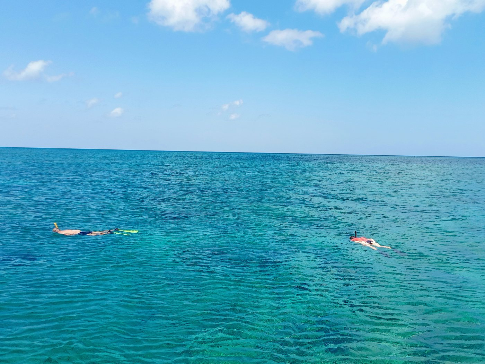
Spesifikasi alat
Snorkel
TUSA Hyperdry Snorkel
Masker
TUSA Splash
Fins
Cowfish / Alba
Pelampung
Life jacket
Paket sewa
Paket
Harga
Paket lengkap Snorkel + masker + fins + life jacket
Rp 50.000 /set /hari
Paket tanpa life jacket Snorkel + masker + fins
Rp 40.000 /set /hari
Sewa satuan
Alat
Harga
Snorkel
Rp 15.000 /hari
Masker
Rp 15.000 /hari
Fins
Rp 15.000 /hari
Life jacket
Rp 15.000 /hari
Syarat & ketentuan
Pembayaran dilakukan di awal sebelum alat digunakan.
Kerusakan atau kehilangan alat menjadi tanggung jawab penyewa dan dikenakan biaya penggantian.
Life jacket wajib digunakan bagi tamu yang belum mahir berenang.
Sewa mengikuti ketersediaan stok alat di lokasi.
Alat snorkeling sudah termasuk dalam semua paket tur pulau (Bab 07). Pesan lewat katalog WhatsApp: wa.me/p/28508148958779838
SunaRi Beach Resort Selayar · Panduan Tamu14
06Acara
Sewa tempat untuk acara
Meeting, gathering kantor, perayaan, hingga dinner semi formal di tepi Pantai Sunari.
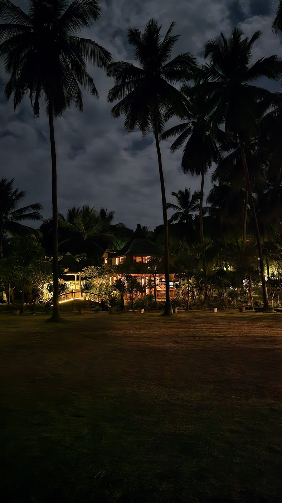
Pilihan venue
Waktu pemakaian 08.00–17.00 WITA
Kapasitas 60–80 orang
Wantilan
Rp 2.500.000
Area utama yang tenang dan tertata, ideal untuk dinner semi formal, meeting, maupun presentasi.
Kapasitas 40–60 orang
Beach Club
Rp 2.000.000
Suasana santai di tepi pantai, ideal untuk lunch atau dinner santai, perayaan ulang tahun, dan acara sejenis.
Kapasitas 100 orang
Lapangan & Panggung
Rp 2.000.000
Ruang terbuka yang luas, ideal untuk games, gathering, dan berbagai acara outdoor.
Ketiga area dapat disewa sekaligus dalam satu acara, dengan harga sesuai tarif masing-masing.
Fasilitas termasuk
Venue, meja & kursi
Proyektor, LCD & speaker
Listrik
Kebersihan area
SunaRi Beach Resort Selayar · Panduan Tamu15
06Acara
Ketentuan acara
Konsumsi
Tamu dipersilakan membawa makanan & peralatan makan sendiri
Makanan wajib dalam kondisi siap saji
Sewa peralatan makan
Mulai Rp 1.500.000, sudah termasuk service
Piring saji, piring makan, sendok, garpu & perlengkapan lain
Harga menyesuaikan jumlah tamu
Dekorasi
Diperbolehkan, termasuk dari vendor luar
Pembersihan setelah acara dapat dilakukan oleh pihak tamu
Penambahan waktu
Melewati pukul 17.00 dikenakan biaya Rp 500.000, atau sesuai kesepakatan
Sound system
Penggunaan maksimal hingga pukul 22.00, demi kenyamanan tamu yang menginap
Akomodasi
Peserta acara memperoleh harga corporate untuk kamar
Tanpa minimum jumlah pemesanan
Booking & pembayaran
Pemesanan minimal 3 hari sebelum acara
DP 50% saat booking
Pelunasan setelah acara selesai
Reschedule dapat dilakukan dalam 6 bulan; dana tidak dapat dikembalikan
Kami dengan senang hati menyesuaikan paket sesuai kebutuhan acara Anda. Hubungi WhatsApp 0821-8903-3044 atau lihat katalog: wa.me/p/28083493487968437
SunaRi Beach Resort Selayar · Panduan Tamu16
07Tur pulau
Jelajah pulau dari SunaRi
Pulau-pulau eksotis Selayar bisa dijelajahi langsung dari resort. Semua tur privat sudah termasuk kapal, alat snorkeling, lunchbox & tiket masuk.
Kiri: Pulau Gusung, terlihat langsung dari Pantai Sunari. Kanan: air toska Pulau Bahuluang.
Paket
Jenis
Durasi
Mulai dari
Tur Eksotis Pulau Gusung
Privat · kapal
1 hari (07.00–15.00)
Rp 333.750 /orang*
Tur Eksotis Pulau Bahuluang
Privat · mobil + kapal
1 hari (07.00–16.00)
Rp 652.500 /orang*
Tur Eksotis Polassi & Tambolongan
Privat · mobil + kapal
1 hari (07.00–16.30)
Rp 847.500 /orang*
Open Trip Jelajah Pulau Selayar
Gabungan · min. 8 orang
2 hari
Rp 3.000.000 /orang
*Harga per orang untuk rombongan 8 orang tanpa pemandu. Harga lengkap per jumlah tamu ada di halaman berikutnya.
Sebelum berangkat: sarapan di SunaRi tersedia mulai 07.00. Jadwal dapat disesuaikan oleh kapten & pemandu mengikuti cuaca, kondisi laut dan pasang-surut.
SunaRi Beach Resort Selayar · Panduan Tamu17
07Tur pulau
Tur Eksotis Pulau Gusung
Tur privat satu hari: hopping pulau & snorkeling, langsung dengan kapal dari SunaRi.
Snorkeling Liang Kareta & JekneiaPantai Liang Kareta · Bone MaleaGua Balojaha
Jadwal tur
07.00–08.00
Persiapan & sarapan di SunaRi.
08.00–08.30
Berangkat dengan kapal sewa privat.
08.30–09.30
Snorkeling Liang Kareta: terumbu karang & biota laut.
09.30–10.30
Pantai Liang Kareta, lanjut ke Pantai Bone Malea.
10.30–11.30
Pantai & Gua Balojaha: gua laut, foto & berenang.
11.30–12.30
Makan siang (lunchbox di lokasi).
12.30–13.30
Snorkeling Jekneia: taman karang bawah laut.
13.30–14.30
Waktu bebas & berenang (opsional: kayak).
15.00
Kembali ke SunaRi. Tur selesai.
Harga per orang
Jumlah
Tanpa pemandu
Dgn pemandu
1 orang
Rp 990.000
Rp 1.740.000
2 orang
Rp 615.000
Rp 990.000
3 orang
Rp 490.000
Rp 740.000
4 orang
Rp 427.500
Rp 615.000
5 orang
Rp 390.000
Rp 540.000
6 orang
Rp 365.000
Rp 490.000
7 orang
Rp 347.143
Rp 454.286
8 orang
Rp 333.750
Rp 427.500
Termasuk
Sewa kapal privat
Alat snorkeling + pelampung
Lunchbox + air mineral
Tiket masuk destinasi
Kapten & kru berpengalaman
Pemandu lokal (paket dgn pemandu)
Tidak termasuk
Pengeluaran pribadi & belanja
Dokumentasi foto/video tambahan
Sewa kano/kayak opsional
Tip kapten/kru/pemandu (sukarela)
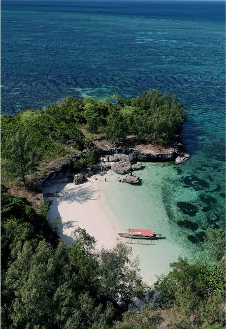
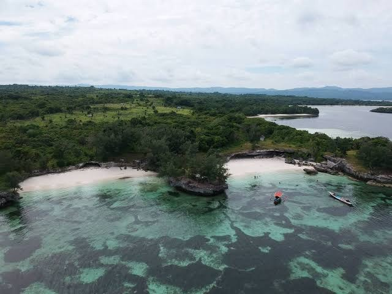
SunaRi Beach Resort Selayar · Panduan Tamu18
07Tur pulau
Tur Eksotis Pulau Bahuluang
Jelajah pulau lewat jalur darat ke Desa Turungan, lalu kapal privat.
Snorkeling Makam KarangPantai Pasir Timbul & Pantai BahuluangGua Gua Lipang
Jadwal tur
07.00–08.00
Sarapan di SunaRi & persiapan.
08.00–09.00
Mobil privat ke Desa Turungan.
09.00–10.00
Bertemu kapten, menyeberang ke Pulau Bahuluang.
10.00–11.00
Snorkeling Makam Karang: formasi karang unik.
11.00–12.00
Pasir Timbul Bahuluang (tergantung pasang-surut).
12.00–13.00
Pantai Bahuluang & makan siang (lunchbox).
13.00–14.00
Jelajah Gua Lipang & lanskap eksotis.
15.00–16.00
Kembali ke SunaRi. Tur selesai.
Harga per orang
Jumlah
Tanpa pemandu
Dgn pemandu
1 orang
Rp 2.640.000
Rp 3.540.000
2 orang
Rp 1.440.000
Rp 1.890.000
3 orang
Rp 1.040.000
Rp 1.340.000
4 orang
Rp 840.000
Rp 1.065.000
5 orang
Rp 900.000
Rp 1.080.000
6 orang
Rp 790.000
Rp 940.000
7 orang
Rp 711.429
Rp 840.000
8 orang
Rp 652.500
Rp 765.000
Armada: 1–4 orang 1 mobil · 5–8 orang 2 mobil.
Termasuk
Mobil privat (resort ⇄ Turungan)
Sewa kapal privat
Alat snorkeling + pelampung
Lunchbox + air mineral
Tiket masuk destinasi
Sopir & BBM
Pemandu lokal (paket dgn pemandu)
Tidak termasuk
Pengeluaran pribadi & belanja
Dokumentasi foto/video tambahan
Aktivitas tambahan opsional
Tip sopir/kapten/pemandu (sukarela)
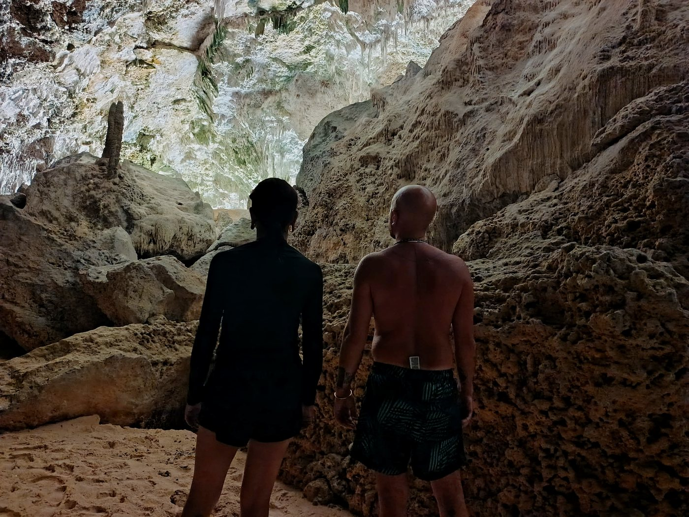
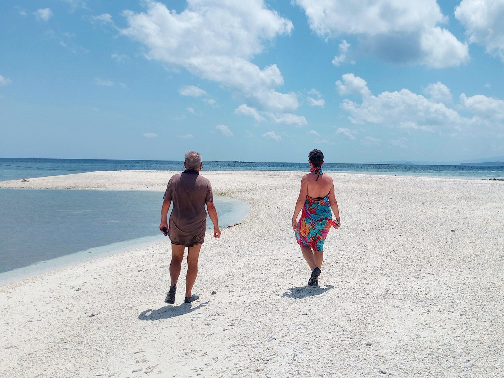
SunaRi Beach Resort Selayar · Panduan Tamu19
07Tur pulau
Tur Eksotis Polassi & Tambolongan
Trekking Bukit Nane, hopping pulau & snorkeling.
Trekking Bukit Nane ±15 menitSnorkeling TambolonganIkonik Pasir Timbul Tambolongan
Jadwal tur
07.00–08.00
Sarapan di SunaRi & persiapan.
08.00–09.00
Mobil privat ke Desa Turungan.
09.00–10.30
Menyeberang ke Pulau Polassi.
10.30–11.45
Trekking Bukit Nane: panorama laut & foto.
11.45–13.00
Pantai Bukit Nane, makan siang & istirahat.
13.00–14.00
Pantai & snorkeling Tambolongan.
14.00–15.00
Pasir Timbul Tambolongan & waktu bebas.
15.00–16.30
Kembali ke SunaRi. Tur selesai.
Harga per orang
Jumlah
Tanpa pemandu
Dgn pemandu
1 orang
Rp 4.147.500
Rp 5.047.500
2 orang
Rp 2.197.500
Rp 2.647.500
3 orang
Rp 1.547.500
Rp 1.847.500
4 orang
Rp 1.222.500
Rp 1.447.500
5 orang
Rp 1.207.500
Rp 1.387.500
6 orang
Rp 1.047.500
Rp 1.197.500
7 orang
Rp 933.214
Rp 1.061.786
8 orang
Rp 847.500
Rp 960.000
Armada: 1–4 orang 1 mobil · 5–8 orang 2 mobil.
Termasuk
Mobil privat (resort ⇄ Turungan)
Sewa kapal privat
Alat snorkeling + pelampung
Lunchbox + air mineral
Tiket Bukit Nane & atraksi
Sopir & BBM
Pemandu lokal (paket dgn pemandu)
Tidak termasuk
Pengeluaran pribadi & belanja
Dokumentasi foto/video tambahan
Aktivitas tambahan opsional
Tip sopir/kapten/pemandu (sukarela)
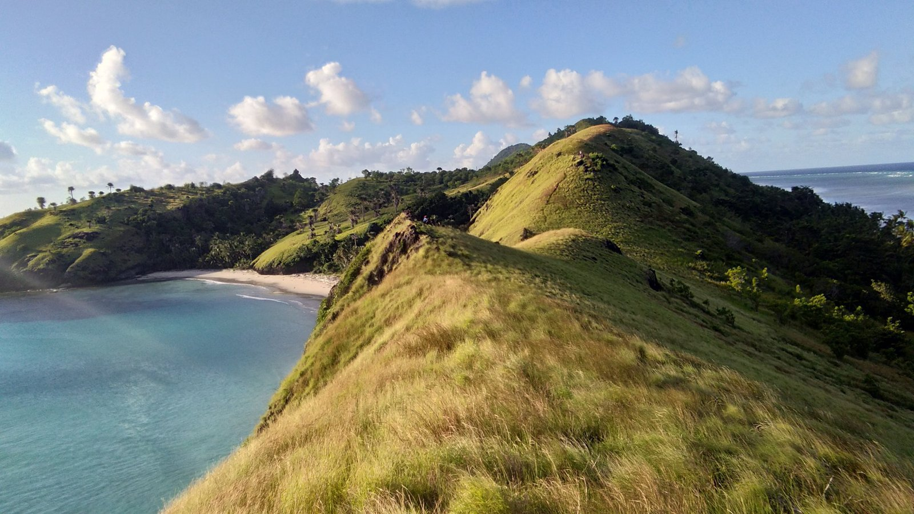
SunaRi Beach Resort Selayar · Panduan Tamu20
07Tur pulau
Open Trip Jelajah Pulau Selayar
Wisata bahari 2 hari bersama peserta lain: temukan surga tersembunyi Sulawesi Selatan.
Harga Rp 3.000.000 /orangDurasi 2 hariKuota min. 8 orangTitik temu penjemputan area/pelabuhan Selayar
Hari 1 · Pulau Gusung
Penjemputan, briefing keselamatan & pembagian alat snorkeling
Pantai Balojaha: pasir putih & air toska
Pantai Liang Tarrusu: tebing kapur ikonik
Pantai Bone Malea: makan siang lunchbox
Pantai Liang Kareta: berenang & snorkeling
Kembali ke pelabuhan / resort
Hari 2 · Bahuluang & Polassi
Penjemputan & menuju pelabuhan
Bukit Nane (Pulau Polassi): panorama 360°
Pasi Timbul Polassi (tergantung pasang-surut)
Makan siang di tepi pantai pulau
Liang Lipang (Pulau Bahuluang): gua pesisir
Snorkeling di Makam Karang
Serah terima dokumentasi & perpisahan
Termasuk
Antar-jemput titik temu/pelabuhan di Selayar
Kapal hopping pulau bersama 2 hari
Masker, snorkel & pelampung
Tiket & izin semua destinasi
Lunchbox & air mineral 2 hari
Pemandu lokal berlisensi
Dokumentasi foto & video bawah laut
Tidak termasuk
Tiket pesawat/feri ke Selayar
Penginapan (menginaplah di SunaRi)
Pengeluaran pribadi
Tip sukarela untuk kru & pemandu
Yang perlu dibawa
Baju renang & baju ganti
Tabir surya ramah karang
Kacamata hitam & topi
Dry bag untuk ponsel/kamera
Sepatu air / sandal anti-selip
Ketentuan: minimal 8 orang per keberangkatan (jika tidak terpenuhi: penyesuaian harga, jadwal ulang atau refund penuh sesuai kesepakatan). Rute dapat berubah karena cuaca/gelombang. Sinyal di pulau terluar terbatas. Bukit Nane butuh kebugaran sedang.
SunaRi Beach Resort Selayar · Panduan Tamu21
08Rute & akses
Tiga jalan menuju SunaRi
Dari Makassar, Selayar bisa dicapai lewat udara, darat + feri, atau kapal langsung.
1Udara · tercepat
Makassar (Sultan Hasanuddin) → Bandara H. Aroeppala±45 mnt
Bandara → SunaRi (mobil)±10–15 mnt
Cek jadwal maskapai H-7.
2Darat & feri
Terminal Malengkeri → Pelabuhan Bira±4–5 jam
Feri Bira → Pamatata (ASDP)±2 jam
Pamatata → SunaRi±1–1,5 jam
Penyeberangan pagi & siang.
3Kapal langsung
KM Dharma Kartika III: Makassar → Benteng±10–11 jam
Benteng → SunaRi (mobil)±20–30 mnt
Berangkat malam, tiba pagi. Tidak setiap hari.
SunaRi Beach Resort Selayar · Panduan Tamu22
08Rute & akses
Antar-jemput & transfer
Kendaraan privat khusus rombongan Anda, sudah termasuk sopir, BBM & parkir.
Shuttle lokal Selayar (sekali jalan)
Rute
1–4 tamu (1 mobil)
5–8 tamu (2 mobil)
Bandara H. Aroeppala ↔ SunaRi
Rp 150.000
Rp 300.000
Pelabuhan Benteng ↔ SunaRi
Rp 200.000
Rp 400.000
Pelabuhan Pamatata ↔ SunaRi
Rp 400.000
Rp 800.000
Transfer Makassar ↔ SunaRi (total per rombongan)
Opsi A · Mobil privat penuh
Mobil privat langsung termasuk penyeberangan feri. Paling nyaman.
Tamu
Armada
Total
1 tamu
1 mobil
Rp 1.950.000
2 tamu
1 mobil
Rp 2.000.000
3 tamu
1 mobil
Rp 2.050.000
4 tamu
1 mobil
Rp 2.100.000
5 tamu
2 mobil
Rp 4.050.000
6 tamu
2 mobil
Rp 4.100.000
7 tamu
2 mobil
Rp 4.150.000
8 tamu
2 mobil
Rp 4.200.000
Opsi B · Bus premium + shuttle
Bus sleeper/eksekutif Makassar–Pamatata + shuttle privat. Lebih hemat.
Tamu
Layanan
Total
1 tamu
1 mobil + bus
Rp 1.100.000
2 tamu
1 mobil + bus
Rp 1.550.000
3 tamu
1 mobil + bus
Rp 2.000.000
4 tamu
1 mobil + bus
Rp 2.450.000
5 tamu
2 mobil + bus
Rp 3.550.000
6 tamu
2 mobil + bus
Rp 4.000.000
7 tamu
2 mobil + bus
Rp 4.450.000
8 tamu
2 mobil + bus
Rp 4.900.000
Ketentuan: 1 mobil maks. 4 tamu + 4 koper sedang. Tiket feri & bus dihitung per orang sesuai tarif resmi operator. Konfirmasi jadwal kedatangan & data penumpang paling lambat H-1 via WhatsApp 0821-8903-3044.
SunaRi Beach Resort Selayar · Panduan Tamu23
09Reservasi
Cara reservasi
Cukup 3 langkah lewat WhatsApp, tanpa aplikasi lain.
1
Chat admin
Hubungi WhatsApp 0821-8903-3044.
2
Kirim data
Tanggal check-in & check-out, jumlah tamu (dewasa & anak), tipe kamar, perlu antar-jemput atau tidak.
3
Bayar & selesai
Admin kirim harga & ketersediaan → transfer & kirim bukti → booking terkonfirmasi.
Mau sekalian Senja Dinner, tur pulau atau antar-jemput? Tulis di chat yang sama, admin akan mengatur semuanya.
Pertanyaan yang sering ditanyakan
Jam check-in & check-out?
Check-in mulai 14.00 WITA, check-out paling lambat 12.00 WITA.
Sudah termasuk sarapan?
Ya, semua tipe kamar.
Kamar mana yang ada air panas?
Hanya VIP Superior Bungalow (bathtub & air panas).
Bisa tambah extra bed?
Bisa, berbayar: 1 untuk tipe 2 orang, 2 untuk Family Superior.
Aman untuk anak-anak?
Pantai Sunari landai & aman untuk anak.
Tamu luar boleh ke resto?
Boleh, Bajoy Beach Resto buka 07.00–19.00 untuk tamu tidak menginap.
Ayunan raksasa berbayar?
Tidak, ayunan raksasa gratis.
Bisa dijemput di bandara?
Bisa, berbayar. Lihat tarif di Bab 08.
SunaRi Beach Resort Selayar · Panduan Tamu24
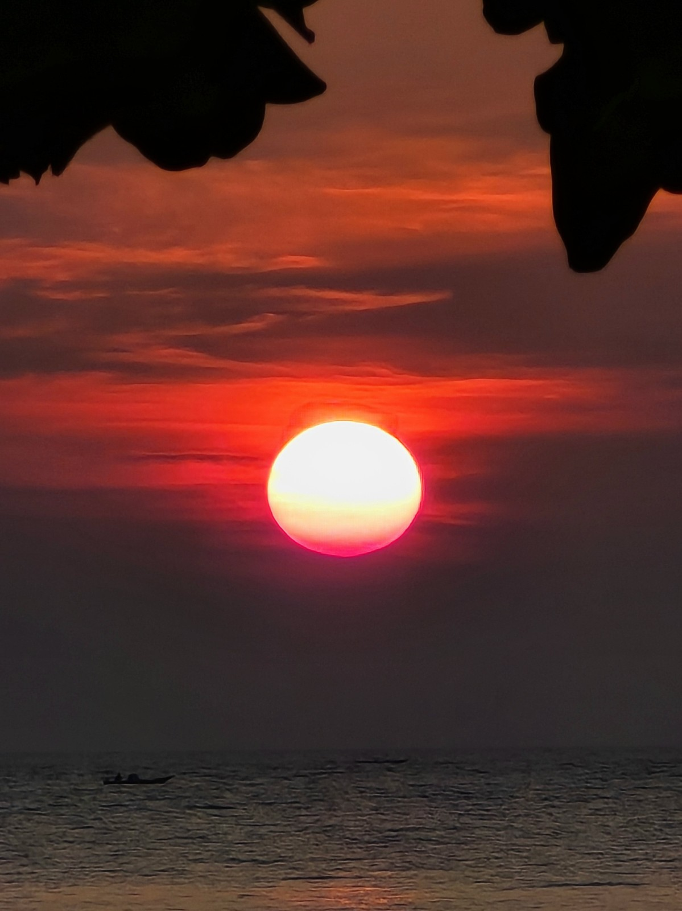
Sampai jumpa di Pantai Sunari.
Reservasi & informasi
WhatsApp 0821-8903-3044
Instagram @sunaribeachresortselayar
Jl. Poros Benteng – Appatana KM 14, Dusun Tile-Tile Utara, Desa Patikarya, Kec. Bontosikuyu, Kab. Kepulauan Selayar, Sulawesi Selatan
Google Maps: maps.app.goo.gl/iUWWHNCT7Vyu4i537
Informasi & harga dapat berubah sewaktu-waktu · Edisi 2026